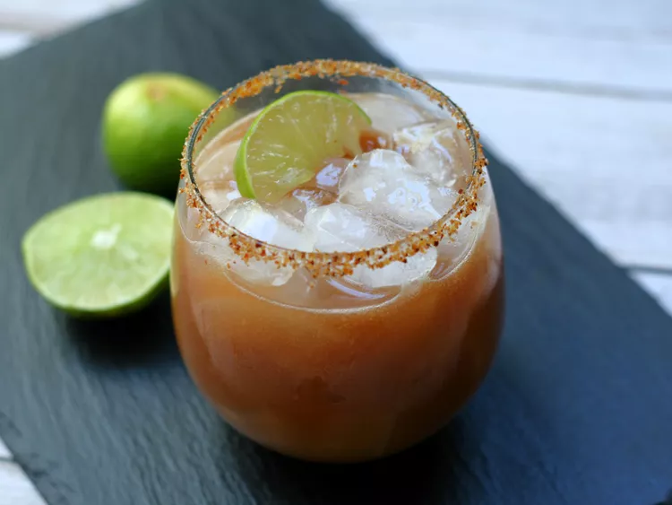

Home
Tamarind Margarita

Recipe Description
Have you ever had a tamarind margarita? This twist on the classic margarita has the perfect sweet-tart flavor from the tamarind paste. Add an extra 1/2 oz agave nectar if you like things a little sweeter.
Ingredients
- 1 tablespoon chili-lime seasoning (such as Tajin®)
- 1 lime wedge
- 2 cups ice, or as needed
- 2 ounces tamarind paste concentrate
- 1 1/2 fluid ounces silver tequila
- 1 fluid ounce agave nectar
- 1 fluid ounce lime juice
- 1/2 fluid ounce triple sec
Steps
- Sprinkle chili-lime seasoning onto a plate. Moisten the rim of a glass with the lime wedge. Press the moistened rim into the seasoning. Fill glass with ice.
- Fill a cocktail shaker half-full with ice. Add tamarind paste, tequila, agave nectar, lime juice and triple sec to the shaker. Seal and shake vigorously until outside is frosted, 10 to 15 seconds. Strain mixture into the glass. Garnish with the lime wedge.